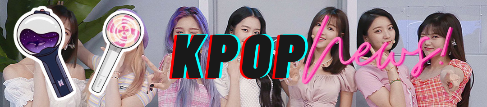

|  |
| Home | Quem somos | Contato |
|
O grupo Boyfriend (BF) voltou com o single 'Ending Credit', em comemoração ao 10° aniversário do grupo!
O grupo, que foi o primeiro boygroup da Starship, debutou em 2011 e disbandou em 2019 e deixou a empresa. Eles planejam voltar sob o nome BF. |
|
Já faz 1 ano da icônica parceria entre Blackpink e Lady Gaga
1 ano atrás, BLACKPINK & Lady Gaga levavam os gæs ao delírio com o lançamento de "Sour Candy". Mesmo sem clipe, o hit atingiu #2 no Spotify Global, debutou na Billboard Hot 100, ganhou prêmios e acumula atualmente +300 milhões de streams! |
|
Depois de 6 meses no ar, o canal de TV Loading finalmente encerra suas atividades
Com desistência da principal patrocinadora, a Kalunga, o canal de TV Loading encerrou suas atividades ontem (27). O canal tinha foco em conteúdos como K-Pop, Animes, Jogos e outros. Foram somente seis meses no ar mas valeu apena ver o trabalho incrível de um time excepcional. Agora o canal não passará os programas ao vivo e inéditos na programação, somente reprises. |
|
O Seungkwan, do Seventeen, mencionou o Monsta X em sua entrevista para a revista ELLE.
Q: Parece que você é muito carinhoso por grupos que estrearam na mesma época que você, como Monsta X, Astro etc. Seungkwan: "Fora os meus membros, essas são as pessoas com quem me relaciono. Especialmente Monsta X hyungs, quando acabamos de debutar, costumávamos dividir a mesma sala de espera. Imagine uma sala do mesmo tamanho que esta que você está me entrevistando com 20 pessoas! Acho que com muito carinho e é muito legal estarmos juntos há 6 anos. Mais do que qualquer outra coisa, acho legal estarmos todos trabalhando ativamente até agora." |